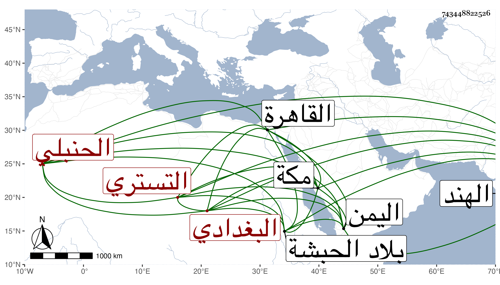

0902Sakhawi.DawLamic.ITO20230111-ara1.EIS1600.743448822526
Biography ID: 743448822526
584
فتح الله بن نصر الله بن أحمد بن محمد بن عمر التستري الأصل البغدادي الحنبلي أخو المحب أحمد وعبد الرحمن ووالد عثمان المذكورين ، ذكره شيخنا في أنبائه فقال : خرج من بلاده مع أبيه وإخوته وطاف هو البلاد ودخل اليمن ثم الهند ثم الحبشة وأقام بها دهرا ثم رجع إلى مكة وصحب فيها الأمير يشبك الساقي الأعرج حين كان هناك منفيا من المؤيد وجاور بها صحبته فلما عاد الأمير إلى القاهرة وتأمر حضر إليه فأكرمه ، واتفق موت الشمس الحبتي شيخ الخروبية الجيزية فقرر بعنايته في المشيخة عوضه بعد أن كان تقرر فيها غيره واستمرت بيده حتى مات في ربيع الأول سنة ثمان وعشرين وهو ابن ستين أو جازها ، وقد روى عنه التقي بن فهد في معجمه .
